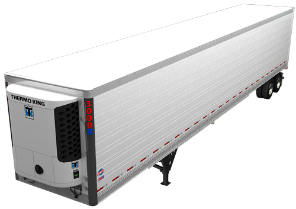

|  |
Características
-
Toldo de Aluminio de alta resistencia
-
Perímetro de sujeción con abrazaderas
Ventajas
-
Provee una rigidez en la estructura del techo.
-
Mayor resistencia en la parte de afuera y a lo largo de la línea de remaches de la hoja del techo.
|